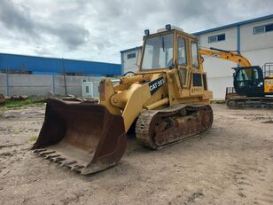
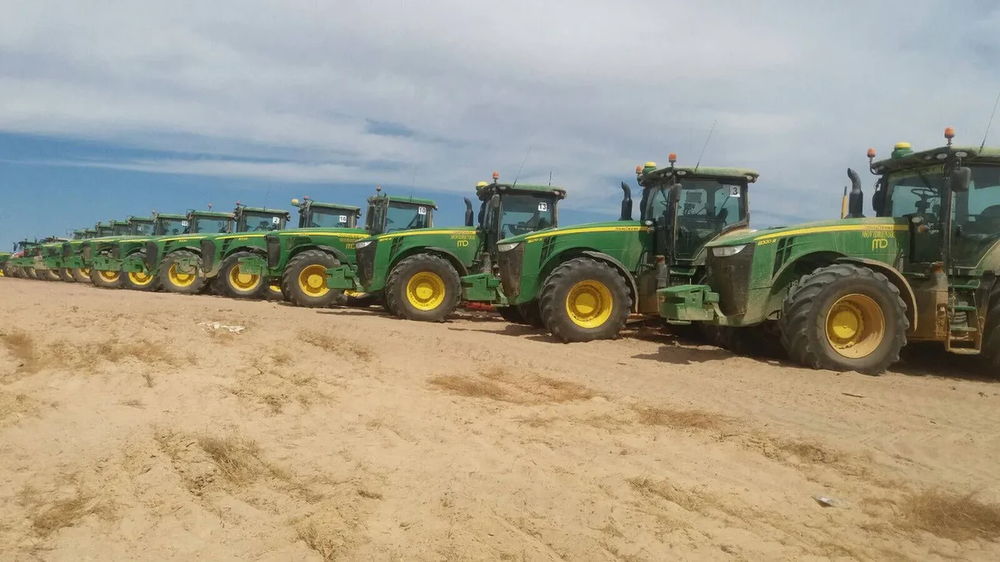
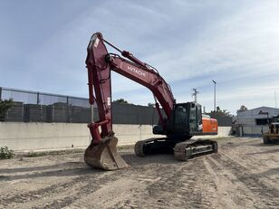
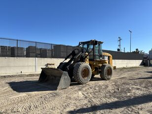
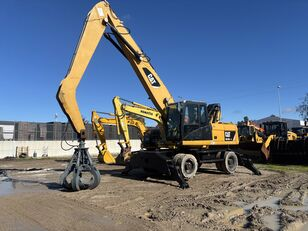

01
Movimiento de tierras
Maquinaria orientada a preparación del terreno y trabajos de empuje.
Jerez de la Frontera · Cádiz
Especialistas en maquinaria de obra pública y construcción. Atención directa para encontrar la solución que mejor encaja con su proyecto.
OBRA
PÚBLICA
Maquinarias Sanlúcar
Desde Jerez de la Frontera, atendemos consultas relacionadas con maquinaria de obra pública y construcción con un trato cercano, claro y profesional.
Cuéntenos qué necesita y nuestro equipo le orientará personalmente.
Contactar con el equipo
Áreas de especialización
Equipos para movimiento, carga, excavación y manipulación en proyectos de construcción e infraestructuras.

Maquinaria orientada a preparación del terreno y trabajos de empuje.

Equipos para zanjas, cimentaciones y operaciones de excavación.

Soluciones para manipular y desplazar materiales dentro de la obra.

Equipos versátiles para elevar y posicionar cargas con eficiencia.
Imágenes publicadas en perfiles comerciales de la empresa. No representan disponibilidad actual.
Atención personalizada
Comparta el tipo de obra, las condiciones y sus necesidades.
Valoramos con usted las características del equipo adecuado.
Resolvemos sus dudas de forma clara y personalizada.
Contacto
Estamos en Jerez de la Frontera. Llámenos o escríbanos y atenderemos su consulta.